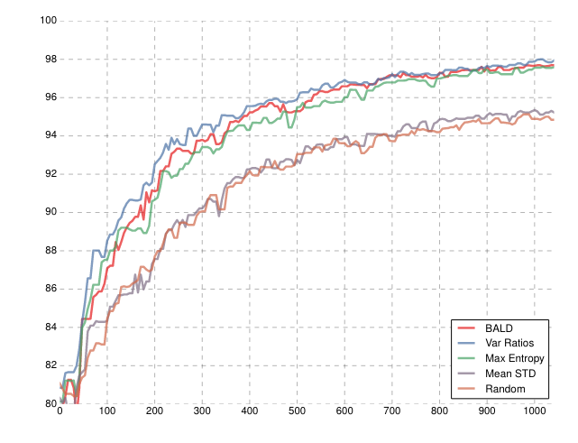
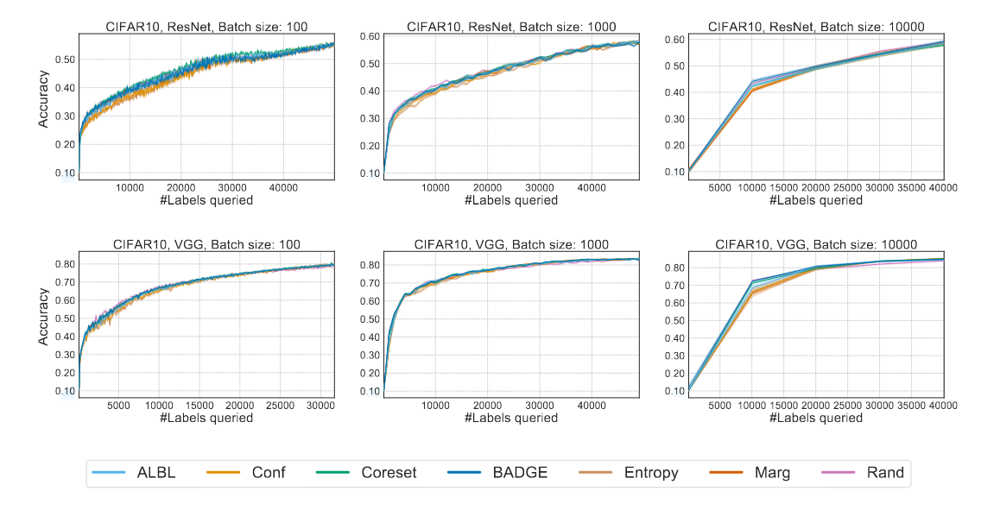
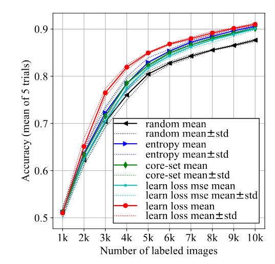
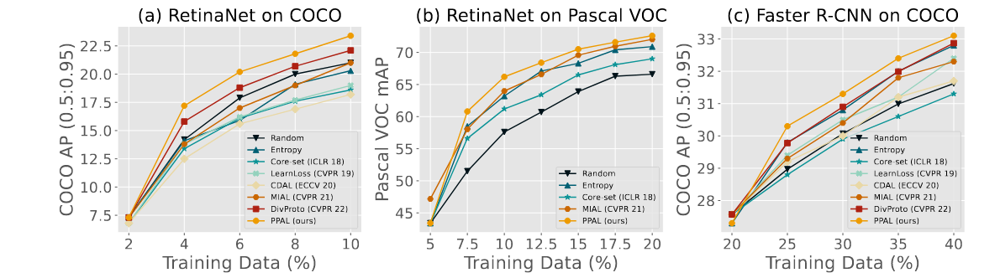

The title is provocative, this short post will be used to compile published results regarding active learning and the unreachable quest of beating random sampling. I will focus on application on computer vision since it is my area of research, but i think the results will be extrapolatable. ALl results will be attached to the paper they come from. I will try to organise and update it on a regular basis, this is not to make fun or critize anything, i work in AL and i know how hard it is to beat random sampling.
Introduction
Active Learning (AL) is the field that is interested in finding the msot informative data points from an unlabeled pool of data. There are two families of selection philosophy, the first one is the uncertainty based selection, where we select point for which the estimator is the least certain about, it is like focusing on model’s weaknesses. And there are the representation based selection where we select data points that are as different of each other as possible. The other methods are a combination of those two.
Representation based
I put representation based selection in a separate section because they are completly independent of the problem. For images, they are based on images embeddings hooked after the encoder part of the neural network, and this is independent on the task. The other particularities of this type of selection is that you could get embeddings of your data from any model. So one classical approach is to train an encoder in a self-supervised fashion with SimCLR(Chen et al. 2020) or LeJEpa(Balestriero and LeCun 2025) and use those embeddings to select the first batch of data when no label is available.
GOAT of representation based selection, Core-Set (Sener and Savarese 2018), this is a repulsive sampling of latent space based on some distances, the default is the euclidean distance, but since dimension can get quite large, any distance could work.

Some extensions have been published using other type of algorithms based on point-cloud sampling.
Determinantal point processes (DPP) (Bıyık et al. 2019), k-medoids (de Mathelin et al. 2021) 
Selecting the most typical item from k-means clustered data TypiClust (Hacohen, Dekel, and Weinshall 2022) 
Image Classification
I will start with the big baselines of AL, these are the most famous acquisition function that shapes the AL world.
BALD, use of dropout layers to quantify information gain by quantifying aleatoric and epistemic uncertainty, i like this strat because it leads to beautiful visualisation of multiple different prediction at inference time, but it is computationaly costly. (Gal, Islam, and Ghahramani 2017) 
Badge is a strategy i did not implement yet but is in most benchmarks.

In order to quantify uncertainty, somme professional cooks buildt a auxialliary neural net that learn the loss function during the supervised training, and estimate the uncertainty about the data point prediction using their estimated loss (Yoo and Kweon 2019). 
Object detection
The object detection problem (and instance segmentation) poses some question. Image classification output are probability vector representing the uncalibrated confidence the network has for the image belonging to each class. But in object detection, the prediction are done at the region level in the image, and the predictions are variables, there can be no prediction or hundreds, and each detection is characterized by a bounding box and a classification. Each classification has a score in \([0,1]\) that represents the confidence the network has in the classification. We usually don’t have access to the complete vector of probabilities.
The learning Loss framework is adapted to any architechture and they also developed an experiment on object detection here : 
Plug And play active learning (PPAL) (Yang, Huang, and Crowley 2024) 
Semantic Segmentation
Here it is very interesting, each pixel is a classifier. So you can apply each algorithm in the image classification category indepently at the pixel level. You can then use some computer vision algorithm to aggregate the prediction to label the full image. Some strategy focus on labeling only part of the image, and other operates at the image level.
Some uses advanced models like diffusion (Kim et al. 2025) 
Conclusion
As you can see, all the results are differents, some contains confidence bands some dont, some have different performace for the same models some dont. But the common denominator amoung all those work is that whatever advanced the selection is, the gain against random sampling is never that big. Of course in the long term it will add up and everything, but i am wondering what could be the maximum achievable gain the best AL selection could provide.
If you work in AL, let’s do our best to make it work :).